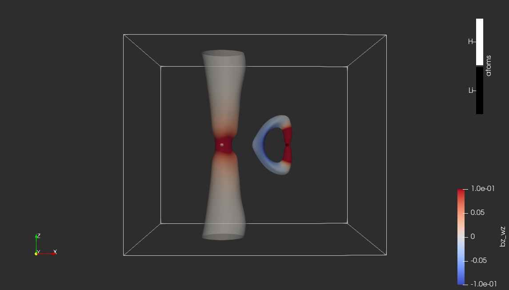

The magnetically-induced current density in LiH molecule studied with the Omega function¶
 |
|---|
| Contour of omega_bz colored by bz_wz. Isovalue: omega_bz=0.75, bz_wz scale: restricted to [-0.1, 0.1] |
Pipeline description¶
This example illustrates the calculation of the magnetically-induced current density (MICD) tensor in LiH molecule in the DIRAC software, followed by the calculation of the Omega index with the QCTEN script and its subsequent topological analysis in the TTK software.
The first step involving quantum chemistry calculations aims to export the MICD tensor and its gradient on a regular 3D grid. The setup chosen for these calculations involves the Dirac-Coulomb Hamiltonian, the Density Functional Theory method with the B3LYP functional, the basis set of triple-zeta quality (Def-TZVP), and the simple magnetic balance for the generation of a small component set in the presence of a magnetic perturbation. The magnetic field perturbation is applied perpendicularly to the Li-H bond ("z"). The cube grid has 128 points in each Cartesian direction.
The purpose of the second step is a pointwise derivation of a scalar function from these tensor fields. In this case, the studied scalar field represent the so-called Omega index, which is used as an indicator of vortices in the first-order current density field. This step also involves translating data exported from DIRAC in CSV format to the VTI format favored by the TTK and ParaView codes. At the same time, it applies the resampling filter ("ResampleToImage") without changing the number of grid points or grid bounds.
The final step involves analyzing the pre-processed Omega scalar field in the TTK software (one isosurface of this field is plotted in Figure XXX). This step starts with the calculation of the Morse-Smale complex ("XXX" filter) of the simplified data ("XXX" filter), which outputs elements of dimension 0 (critical points), dimension 1 (edges), and dimension 2 (surfaces)...{TODO}
The ultimate goal of this analysis is to extract vortices in the MICD field and verify the usefulness of the Omega index for this purpose. The analysis reveals two types of saddle-maximum separatrices: (i) forming lines that connect the boundaries of the domain and capturing the centers of axial vortices, and (ii) corresponding to a persistent one-dimensional generator capturing the center of toroidal vortices. Figure XXX demonstrates the snapshot of this analysis.
Quantum chemistry calculations¶
Inputs and run scripts¶
- Molecular geometry of LiH molecule in CSV format (in atomic units): LiH.csv
- This is the experimental geometry from NIST database.
- Input(s) for a wave function optimization: scf.inp
- Input(s) for calculations of the magnetic-field response (uses NMR shielding calculations): : rsp.inp
- Run script: run
Outputs¶
- XXX in XXX format
Execution¶
- This paragraph assumes that the DIRAC's
pamscript is available in$PATH(see prerequisites - TODO, write a separate section) - Wave function optimization and response calculations:
mol=lih.xyz
inp_scf=scf.inp
inp_rsp=rsp.inp
pam --inp=$inp_scf --mol=$mol --outcmo
pam --inp=$inp_rsp --mol=$mol --incmo --get="DFCOEF=DFCOEF.smb TBMO PAMXVC"
- Calculations and export of real-space densities:
mol=lih.xyz
inp_vis=jbx.inp
pam --inp=$inp_vis --mol=$mol --put="DFCOEF.smb TBMO PAMXVC" --get="plot.3d.vector=jbx.txt"
- Tips:
Further description¶
Calculation of scalar functions for the topological data analysis¶
Inputs¶
Outputs¶
Run script¶
Topological Data Analysis¶
Inputs¶
-
Molecular geometry of LiH molecule in CSV format (in atomic units): LiH.csv
-
MICD-related data in VTI format:
- Omega function derived from the magnetically-induced current density vector corresponding to the perturbation of the magnetic field applied perpendicularly to the Li-H bond: start_data_omega_bz.vti; data description:
- omega_bz - corresponds to Omega function calculated for the magnetic field (b) applied perpendicularly to the Li-H bond (z);
- bz_wz - corresponds to the z-component of the curl of the current density vector (j) induced by the magnetic field (b) applied perpendicularly to the Li-H bond (z); it is a zz-component of the vorticity tensor.
- Omega function derived from the magnetically-induced current density vector corresponding to the perturbation of the magnetic field applied perpendicularly to the Li-H bond: start_data_omega_bz.vti; data description: